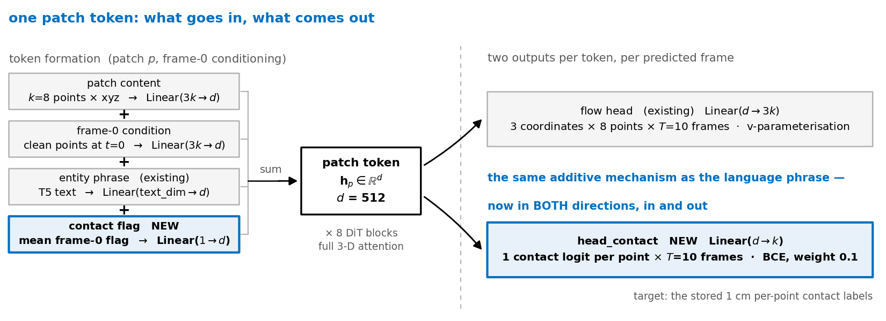
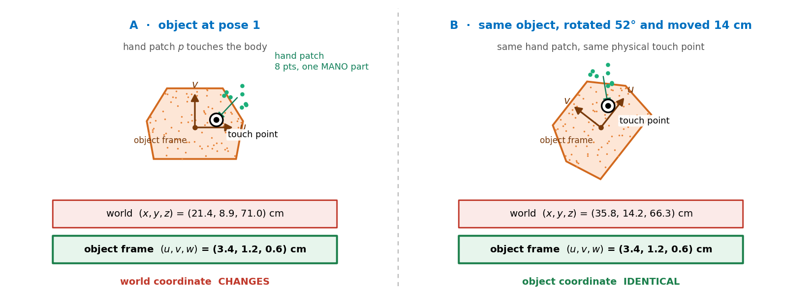
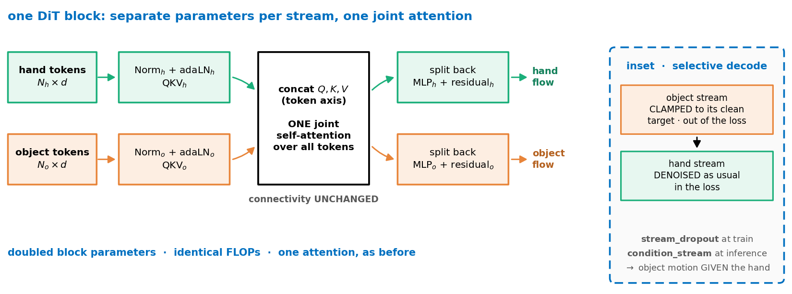

The contact iteration: four arms
3D-WAM · plan · one control and three changes, all trained from scratch on one rig
Lab meeting
2026. 09. 07
Presented by 김범준 (beomjun)
The four arms, against the baseline
- Four arms
- E1 contact in and out
- E2 grasp map
- E3 two-stream
- Results
Every arm is trained from scratch on the identical rig and read against the newly trained baseline — never against the project's 222k-step model.
| arm | the single change vs the baseline | failure mode it targets | cost |
|---|---|---|---|
| baseline fast_o6p512 |
no change — the control every arm is measured against | — | — |
| E1 contact in/out |
a frame-0 contact flag enters as an additive token embedding, the same mechanism as the per-entity language phrase (Linear(1→d) beside Linear(text_dim→d)); a head emits one contact logit per point per frame, trained with BCE | objects moving without contact · wrong grasps | config only |
| E2 grasp map |
per patch token, predict a contact flag plus the touch location expressed in the paired object's own coordinate frame | wrong grasps | a second 4-output head + a loss |
| E3 two-stream |
hand and object tokens get their own norms, QKV and MLPs while attention stays one joint operation; in training one stream is sometimes given its clean target and excluded from the loss, so the model also learns object motion given the hand | objects moving without contact · both hands acting when one suffices | doubled block parameters, same FLOPs |
| the shared rig · identical in all four arms | |
|---|---|
| corpus | v2 · taco, arctic, dexycb, oakink2, grab, hot3d |
| index | contact-window trim on the training index — drops the start and end ready-position phases, keeps 89.9 % of chunks (194,612 of 216,417) |
| frame | no history · chunk_stride 4 · 6 objects × 512 pts · 2 hands × 512 pts |
| model | video-DiT d 512 · depth 8 · heads 8 ≈ 36M · k = 8 part-major Hilbert patches · full 3-D attention · v-parameterisation · 16 Euler steps · EMA 0.999 |
| schedule | AdamW 3e-4 · warmup 300 · cosine to 0.1× · effective batch 32 on one H100 per arm |
| length | 50,000 steps = 8.2 epochs of the stride-4 index (6,082 steps/epoch) |
plan deck · none of the four arms has been trained yet, so no result appears anywhere in this deck · a problem slide and a negative-results slide were cut
E1 · contact in and out
- Four arms
- E1 contact in and out
- E2 grasp map
- E3 two-stream
- Results
| why | Contact is the missing variable. The model learns hand–object co-motion, not causality: on the held-out val basis 12.1 % of predicted object displacement happens on frames where the predicted hand is more than 2 cm away, against 3.2 % in ground truth, and in the GR-1 closed loop the same figure is ≈ 30 %. Nothing in the input or the objective names contact, even though per-point contact labels have been stored all along and never trained on. Language semantics already reach every token of an entity through an additive embedding — contact should enter the same way, and be predicted as well as consumed. |
| how | model.contact_input adds Linear(1→d) of the patch's mean frame-0 contact flag to the token, exactly beside the entity phrase embedding. model.contact_target uses the existing head_contact = Linear(d→k) — one logit per point in the patch, per predicted frame — supervised with BCE at weight 0.1 against the stored 1 cm contact labels. Config only; no new tensors in the data path. |

the 12.1 % / 3.2 % / ≈30 % figures are already-published measurements of the current model (deck #14, #19), not results of this iteration
E2 · grasp map in the object's own frame
- Four arms
- E1 contact in and out
- E2 grasp map
- E3 two-stream
- Results
| why | An exact grasp has to say where on the object each part of the hand touches — and it must not depend on where the object happens to be. Part-to-part is impossible in our data: hands carry 16 MANO parts (33 links for Sharpa) but object points carry part 0 for every rigid object, ARCTIC being the only exception at two. The patch is the right unit instead: patches are built part-major within one entity, so a patch never straddles a MANO part, and at 64 patches per hand it is four times finer than parts while matching the model's own token grid. |
| how | A second head Linear(d→4) per patch token per frame emits a contact logit plus a touch point (u, v, w) in the paired object's local frame, obtained by a rigid fit of that object's frame-0 points onto its frame-t points. Targets come from the stored contact_nn pairing: the mean position of the paired object points, mapped into that local frame. Loss = BCE on the flag + masked L2 on the location, reported in centimetres. |

object-frame fit = rigid Procrustes of the object's frame-0 points onto its frame-t points · schematic, not a rendered chunk
E3 · two streams, selective decode
- Four arms
- E1 contact in and out
- E2 grasp map
- E3 two-stream
- Results
| why | The architecture has no way to say the hand acts and the object follows. Every token runs through the same weights and is distinguished only by a language phrase and its position, so nothing represents which entity is the actor, and there is no way to hold object motion fixed and ask only for a hand. Two streams with joint attention state the asymmetry in parameters; stream conditioning turns it into a learning signal — training on object-motion-given-the-hand is literally training the causality. Lineage: MM-DiT (Esser et al. 2024) and RLDX-1's Multi-Stream Action Transformer, which separates parameters per modality, keeps one joint self-attention, and masks a stream when its signal is absent. |
| how | Per block, hand and object tokens get separate norms, QKV and MLPs with their own adaLN modulation; Q, K and V are concatenated along the token axis, one attention runs over everything, outputs are split back and residuals applied per stream. Connectivity is deliberately unchanged — a windowed-attention arm already lost to full attention in this project. model.stream_dropout then replaces one stream's noisy input with its clean target for a fraction of samples and drops it from the loss, and the sampler gains condition_stream="hand"|"object" so one group can be held fixed at inference. |

references: Esser et al. 2024, MM-DiT (Stable Diffusion 3) · RLDX-1 Multi-Stream Action Transformer
Results · every cell is a placeholder
- Four arms
- E1 contact in and out
- E2 grasp map
- E3 two-stream
- Results
basis (owner's decision) · the 5-second autoregressive rollout, not single 1-second chunks: 5 chained chunks, each conditioned on the model's own previous prediction, on held-out episodes drawn from inside the contact windows · every arm read against the newly trained baseline · no arm has run — nothing below is a measurement
| rollout metric · 5 s | baseline | E1 | E2 | E3 |
|---|---|---|---|---|
| end-point error cm | WILL UPDATE | WILL UPDATE | WILL UPDATE | WILL UPDATE |
| stay-put reference cm | WILL UPDATE | WILL UPDATE | WILL UPDATE | WILL UPDATE |
| TAP-Vid δ_avg % | WILL UPDATE | WILL UPDATE | WILL UPDATE | WILL UPDATE |
| survival at 5 s % | WILL UPDATE | WILL UPDATE | WILL UPDATE | WILL UPDATE |
| survival horizon s | WILL UPDATE | WILL UPDATE | WILL UPDATE | WILL UPDATE |
| minADE over samples cm | WILL UPDATE | WILL UPDATE | WILL UPDATE | WILL UPDATE |
| interaction metric | baseline | E1 | E2 | E3 | ground truth |
|---|---|---|---|---|---|
| object motion without contact | WILL UPDATE | WILL UPDATE | WILL UPDATE | WILL UPDATE | WILL UPDATE |
| contact-onset error | WILL UPDATE | WILL UPDATE | WILL UPDATE | WILL UPDATE | WILL UPDATE |
| missed / false contact | WILL UPDATE | WILL UPDATE | WILL UPDATE | WILL UPDATE | WILL UPDATE |
| contact F1 | WILL UPDATE | WILL UPDATE | WILL UPDATE | WILL UPDATE | WILL UPDATE |
| transport | WILL UPDATE | WILL UPDATE | WILL UPDATE | WILL UPDATE | WILL UPDATE |
| pair RMS cm/frame | WILL UPDATE | WILL UPDATE | WILL UPDATE | WILL UPDATE | WILL UPDATE |
ETA · four arms in parallel, one H100 each, 50,000 steps; landing time pending the loader-optimisation measurement (job 9197) — hours unestimated until that lands
secondary, appendix line when the arms land: the single-chunk standard table and one GR-1 closed-loop task · no number in this deck is a measurement of these arms